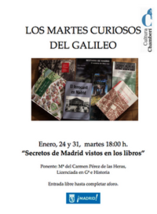
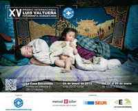
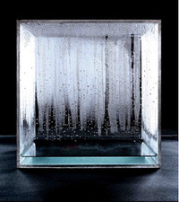
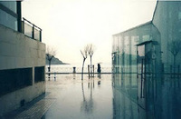
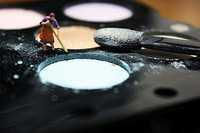
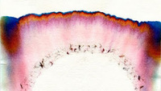
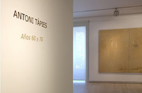
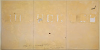

La magia de Chagall inunda Madrid.
Mon, 13 Feb 2012 12:27:14 PST
Organizada por el Museo Thyssen-Bornemisza y la Fundación Caja Madrid, y comisariada por Jean-Louis Prat, presidente del Comité Chagall, esta exposición será la primera gran retrospectiva dedicada al artista ruso en España. En nuestro país no se había visto bien su obra, unicamente una de 1999 en la Fundación Juan March de Madrid. Pero en esta ocasión podremos más de 150 piezas, de las distintas etapas del pintor, Chagall vivió hasta los 98 años. El principal objetivo de esta exposición es destacar el gran papel que su obra ocupa en la Historia del Arte.
Las salas del Museo Thyssen-Bornemisza expondrán trabajos de sus primeros años y de su periodo en París, la capital de la vanguardia en ese momento; también se recogerá su experiencia en la Rusia revolucionaria y en Francia, hasta llegar al exilio forzado en Estados Unidos en 1941.
En las salas de exposición de la Fundación Caja Madrid la atención se centrará en los grandes formatos, la escultura y la cerámica realizados a partir de su retorno a Francia después de la II Guerra Mundial. Llevó sus motivos fantásticos al techo de la ópera de París o sus murales a la Metropolitan Opera de Nueva York.
Nueva exposición de Chema Madoz en Madrid.
Mon, 06 Feb 2012 00:34:40 PST
Chema Madoz es posiblemente nuestro fotógrafo más importante en la actualidad, en la galería Moriarty de Madrid, en el barrio de Chueca, podemos ver hasta el 29 de febrero 17 nuevas fotos en su característico blanco y negro, la mayoría de ellas de gran formato. Son obras creadas en los dos últimos años. Chema Madoz sigue fiel a su peculiar y exitoso estilo pero en esta ocasión ha recurrido a recursos digitales, algo inédito en su carrera. Se trata de una novedad en este artesano de la fotografía. Hasta ahora las imágenes las manipulaba el mismo, utilizando únicamente fotografía analógica. He de reconocer que no sé si me gusta esta evolución de Chema Madoz, personalmente prefería el uso exclusivo de la fotografía analógica.
No es la única novedad, los objetos que imagina Chema Madoz suelen tener una utilidad una función definida, en esta exposición algunas de las fotos expuestas carecen de carácter como objeto, no tienen uso, como en la obra en del avestruz que esconde la cabeza en su propio huevo. En otras obras si reconocemos al Madoz más clásico.
Chema Madoz (Madrid, 1958), fue premio Nacional de Fotografía en 2000, ha realizado numerosas exposiciones individuales por todo el mundo, su obra recoge imágenes extraídas de hábiles juegos de imaginación, en los que perspectivas y texturas tejen sus imágenes.
Galería Moriarty
Calle Libertad nº22
28004 madrid
De martés a sábado de 11:00 a 14:00 y 17:00 a 20:30
http://www.galeriamoriarty.com
Exposición "Del muro a la tabla de skate". Derivas gráficas del colectivo Neighborhood Watch.
Sat, 04 Feb 2012 04:15:11 PST
La exposición titulada Slight Flow, en referencia a una manera de fluir sutil y soterradamente que en su desenvolvimiento construye las conexiones, redes y referencias de las que se compone la auténtica CULTURA, muestra más de una decena de obras y dos instalaciones en las que el poderoso universo personal, fértil e indomable del artista implosiona y asume los riesgos del arte entendido como reacción alérgica, como algo que se segrega, inevitable y libre.
La pintura de Maíllo es un ejercicio corporal comprometido, una reflexión sobre lo marginal con la densidad teórica de Deleuze, la irreverencia de Johathan Meese, la ironía de Philip Guston y la bajada a los infiernos de Zoran Mušič. Desde su aislamiento voluntario en el extrarradio, entendido además como una forma de vida, Maíllo ejecuta su instinto más afinado logrando con ello una de las trayectorias emergentes más interesantes y consistentes del panorama actual.
El Gabinete de Exposiciones del IED Madrid acoge del 2 al 20 de febrero de 2012 la muestra "Del muro a la tabla de skate". Derivas gráficas del colectivo Neighborhood Watch.
Dentro del mundo de la intervención urbana, el graffiti ha sido una de las manifestaciones creativas que ha gozado de mayor libertad y popularidad internacional. Han sido numerosas sus derivas formales y locales, así como varias sus fusiones con música, gráfica y movimientos urbanos, siendo la corriente skate sobre que pretende reflexionar esta exposición.
Hoy día esta imagen trasciende sus orígenes para influir en la estética contemporánea, siendo común su presencia en medios como los de la moda o la publicidad. Esta muestra analiza estas cuestiones a través de las obras de Asier, Didi León, Humo, Murphy, Naone, Negroariel, Posk, Sehu, Sera e Ysen, todo sellos pertenecientes al colectivo Neighborhood Watch.
3 al 20 de febrero de 2012
lunes – viernes | 10:00 – 21:00 Exposición
Gabinete de Exposiciones del Palacio de Altamira
IED Madrid
C/ Flor Alta 8
28004 Madrid
Viernes 3 de Febrero, Guillermo Martin Bermejo en Galeria ARANAPOVEDA. Inauguración a las 20h.
Fri, 03 Feb 2012 07:16:41 PST

La obra de Guillermo Martín Bermejo (España, 1971) ha estado presente estos últimos años, tanto de forma individual como colectiva, en diferentes galerías de Europa y América. Entre otras, varias exposiciones individuales en la galería Travesía 4 de Madrid, Propaganda Portable Art Gallery, (Berlín), Galería Karin Sutter (Basel) o en la Bartels Fondation (Basel), La Central(Bogotá) , además de su participación en diversas ediciones de las ferias ARCO, MACO ,Scope Miami ó Scope Basel y en muestras institucionales de Berlin, Bogotá, México DF, La Casa Encendida y proyecto ABCD de Madrid.
En su obra los aspectos melancólicos y líricos de la adolescencia, representados en un mundo sexual y emocional, ambiguo y naif, pertenecientes en muchas ocasiones a los mitos al cuento popular o a la fábula, aparecen de forma recurrente. Esta indefinición está siempre presente, una ambigüedad perturbadora. Niños-efebo dibujados en pequeño formato sobre la calidez del papel y sus texturas.
“Paseo por el parque de los príncipes pálidos” es su primera exhibición individual en ARANAPOVEDA.
Galeria ARANAPOVEDA
C/ Lope de Vega, 22
28014 Madrid
Exposición 'Madrid vs New York'.
Tue, 07 Feb 2012 03:20:52 PST
La exposición 'Madrid vs New York' muestra en el distrito de Tetuán los contrastes existentes entre los paisajes de ambas ciudades. Se trata de fotografías urbanas de Judit Aragonés e Ignacio Ordás que reflejan "paisajes llenos de contrastes, texturas, volúmenes que rompen perspectivas, líneas que cruzan límites, y llenos y vacíos descompensados". Ambos artistas tienen su estudio, Dinamik, en la Calle Limonero 18. Llevan años dedicándose a la gestión integral de proyectos arquitectónicos de proyección nacional e internacional
La muestra se puede visitar en la sala de exposiciones Pablo Serrano, ubicada en el número 357 de la calle Bravo Murillo de lunes a viernes de 9 a 14 horas y de 16 a 20 horas así como los sábados de 10 a 14 horas.
'Ellas. Creadoras de los siglos XX y XXI', exposición sobre obras de artistas femeninas.
Fri, 27 Jan 2012 03:24:41 PST
La exposición 'Ellas. Creadoras de los siglos XX y XXI', que recorre la producción artística de distintas creadoras contemporáneas y que ha sido inaugurada hoy en Navalcarnero. La exposición, que ha sido organizada por la Comunidad de Madrid y que se enmarca en la Red de Exposiciones Itinerantes (Red Itiner), visitará, a partir del 24 de febrero, los municipios de Móstoles, Las Rozas, Leganés, Collado Villalba, Alcalá de Henares, Colmenar Viejo, Aranjuez, Navacerrada, Alcorcón, San Sebastián de los Reyes, Pinto, Alcobendas y Arganda del Rey. Las piezas, tanto de fotografía como de pintura, escultura o vídeo, se distribuyen en torno a dos secciones temáticas, 'En cuerpo y alma' e 'Interior/Exterior'.
'En cuerpo y alma' reflexiona sobre la dicotomía existente entre ambos conceptos e incluye las creaciones de Frida Kahlo, Gisèle Freund, Marina Abramovic, Cindy Sherman, Paloma Navares, Concha García, Susy Gómez, Marina Núñez, Adriana Duque, Amparo Sard, Naia del Castillo, Victoria Diehl, Carmen Calvo y Concha Jerez.
Por su parte, en 'Interior/Exterior' se exponen obras de Amalia Avia, Esther Ferrer, Isabel Quintanilla, Marisa González, Ouka Leele, Darya Von Berner, Montserrat Soto, Berta Jayo y Diana Larrea, que asumen diferentes posiciones ante la tensión que se produce entre las dos ideas.
También se incluye paralelamente una selección de obras intimistas que representan objetos de la vida cotidiana y la esfera privada de las personas.
A 'Ellas. Creadoras de los siglos XX y XXI' se suman otras cinco exposiciones que integran el programa de la Red Itiner para 2012: 'fotoCAM 2012'; 'Santos Yubero y su tiempo'; 'El cómic español contemporáneo', 'Recortables: sueños de papel' y "Paisajes de Madrid. Fernando Manso".
Los martes “curiosos” del Centro Cultural Galileo.
Wed, 25 Jan 2012 07:27:52 PST

El Centro Cultural Galileo organiza durante los meses de enero, febrero, marzo y abril un conjunto de micro-programas enmarcados bajo el título “Los martes curiosos del Galileo”. La cita es todos los martes a las 18:00h y la entrada es LIBRE y GRATUITA (hasta completar aforo). Cada mes, una temática diferente.
Más información: http://madeinchamberi.com/2012/01/los-martes-curiosos-del-galileo/
Inauguración de la XVª edición del Premio Internacional de Fotografía Humanitaria Luis Valtueña.
Tue, 24 Jan 2012 10:17:40 PST

Médicos del Mundo nos invita hoy a la inauguración de la exposición del XV Premio Internacional de Fotografía Humanitaria Luis Valtueña, en la Casa Encendida a las 20:00 horas.
Este premio se convoca anualmente como homenaje a Luis Valtueña, Flors Sirera, Manuel Madrazo y Mercedes Navarro, cooperantes de Médicos del Mundo asesinados en Ruanda en 1997 y en Bosnia en 1995.
Durante el acto, se entregará el primer premio al fotógrafo Alessandro Grassani por su serie fotográfica “Migrantes medioambientales, la última ilusión” y dos accésit a los fotógrafos Luca Catalano Gonzaga y a Gabriel Pecot.
Exposición 'El Madrid Gastronómico' en el Gastrofestival Madrid 2012.
Tue, 24 Jan 2012 01:00:27 PST
La Comunidad de Madrid ha organizado la exposición 'El Madrid Gastronómico', en el marco de la tercera edición del Gastrofestival Madrid 2012, que se podrá visitar desde hoy hasta el 30 de abril en la biblioteca regional Joaquín Leguina.
La sección fotográfica recoge 23 instantáneas sobre las costumbres gastronómicas en el Madrid actual. Entre ellas podrá verse, desde un bodegón de comida hasta las formas de comer actuales, así como locales, escenas de la familia en torno a la comida y la diversidad cultural. La sección de cine y literatura incluye alrededor de un centenar de monografías, publicaciones periódicas y materiales gráficos y audiovisuales.
Así mismo, la Comunidad ha organizado la tertulia 'La fotografía, captando un instante, haciendo historia', que se celebrará el 26 de enero, y la conferencia 'Cocinando la Historia', que impartirá Escudero y tendrá lugar el 2 de febrero.
Por su parte, la biblioteca Joaquín Leguina expondrá su propia selección de libros y películas relacionados con la gastronomía madrileña.
También se ha incorporado un apartado dedicado a los cafés y tertulias políticas y culturales que se hicieron populares en el Madrid de los siglos XIX y XX.
"De 0 a 200 en 66 años", exposición sobre la historia del Beetle organizada por Volkswagen.
Sun, 22 Jan 2012 06:50:47 PST
Volkswagen ha organizado una exposición en Madrid en la que hace un recorrido histórico del Beetle, un modelo que es el icono de la marca alemana, que ahora relanza con una nueva generación que recoge los principios del diseño del original, lanzado al mercado hace más de seis décadas. Del 25 al 29 de enero, en pleno centro de Madrid, en la Plaza de Callao, se expondrán al público modelos de Beetle de todas las épocas desde su lanzamiento en 1945, desde el modelo clásico del Escarabajo hasta el New Beetle, pasando por las décadas de los 50, 60, 70, 80, 90 y hasta nuestros días.
La muestra ha sido bautizada con el lema "Beetle: De 0 a 200 en 66 años" y con ella se rinde homenaje a un coche que ha estado presente en la conciencia colectiva de varias generaciones. Diseñado en un principio como vehículo militar, el Escarabajo -el nombre se lo puso el New York Times- ha sido protagonista en la gran pantalla con películas como 'Herbie, Volante loco de Disney', se convirtió en símbolo del "flowerpower" de la época hippie y hasta apareció en la portada del famoso disco Abbey Road de los Beatles. Ningún otro modelo de coche ha sido capaz de viajar durante 66 años de historia, convirtiéndose en un icono reconocible en todo el mundo.
La exposición coincide con el lanzamiento del nuevo Beetle, una reinterpretación del modelo original que mantiene intacta su inconfundible silueta.
La Casa de Alba promoverá una exposición con obras del Palacio de Liria.
Thu, 19 Jan 2012 01:15:32 PST
 |
| Español: Fachada noreste del Palacio de Liria de Madrid (España), vista desde el Cuartel del Conde-Duque. Wikipedia |
La Casa de Alba quiere realizar en Madrid a finales de año una exposición con algunas de las obras que tiene en el Palacio de Liria, concretamente pinturas, documentos y esculturas. Además, La Casa de Alba alquilará el palacio de Liria para actos privados.
Antes de la exposición, el palacio de Liria podrá ser alquilado durante este año para celebrar actos privados, a los que asistirán grupos organizados por determinadas empresas. Al parecer, la familia carece de liquidez a pesar de los títulos nobiliarios y del enorme patrimonio. Y, por eso, ha decidido obtener beneficio económico con una de las propiedades más reconocidas de la Duquesa de Alba. Se desconocen el precio y las condiciones del alquiler, pero los clientes deberán contar con el beneplácito de Cayetano Martínez de Irujo para celebrar el acontecimiento.
Situado en el centro de Madrid, el palacio de Liria es calificado como el hermano menor del palacio Real. Construido a finales del siglo XVIII, el inmueble neoclásico tiene 200 habitaciones, 26 salones, una biblioteca con más de 20.000 volúmenes y una destaca colección de arte, con obras de Velázquez, Tiziano, Chagal, Picasso, Rubens, Renoir y Goya.
Actualmente, el palacio de Liria se puede visitar, aunque en un periodo muy corto y en grupos reducidos por lo que la lista de espera es de meses.
El Museo Cerralbo en la III Edición del Madrid Fusión Gastrofestival.
Tue, 17 Jan 2012 01:00:28 PST
III Edición del Madrid Fusión Gastrofestival es una ocasión estupenda para visitar la capital con alguno de los numeros vuelos a Madrid. Las actividades son muchas, pero vamos a destacar la que realiza el Museo Cerralbo.
La institución que se suma a los actos programados con motivo de la III Edición del Madrid Fusión Gastrofestival con la visita temática “Gastronomía y protocolo en la mesa en el siglo XIX”, que se celebrará los jueves 19 y 26 de enero y 2 de febrero, de 18.00 a 19.00 horas. Carmen Simón, comisaria de la muestra “La cocina en su tinta” y autora de “La cocina en Palacio”, y Vanessa Quintanar, investigadora del CSIC, serán las responsables de esta visita centrada en el mobiliario, las piezas de servicio de mesa y los elementos decorativos presentes en los dos salones de comedor y en otras salas de recibir del Palacio, que junto a los menús conservados en el archivo del centro y fotografías y crónicas de época nos sumergirán en el ostentoso modo de vida de la sociedad aristocrática finisecular.
Una ocasión para conocer el museo y la ciudad, recordar que es muy facil viajar a Madrid con Ryanair
Para asistir a cualquiera de las sesiones, es imprescindible la inscripción previa llamando al 91 547 36 46 de lunes a viernes de 10.00 a 14.00 horas, a partir del 9 de enero.
Museo Cerralbo
Ventura Rodríguez, 17
28008, madrid
91 547 36 46
La persistencia de la geometría, exposición en CaixaForum Madrid.
Tue, 10 Jan 2012 00:02:05 PST


La primera exposición de Caixaforum para este 2012 es: La persistencia de la geometría, que muestra conjuntamente obras de las colecciones de arte contemporáneo de la Fundación "la Caixa" y del Museu d'Art Contemporani de Barcelona (MACBA). La exposición, fruto del acuerdo de colaboración suscrito entre ambas instituciones, propone un recorrido por sendas colecciones a partir del uso que de la geometría se ha hecho en la escultura y en la instalación desde los años sesenta hasta nuestros días.
La geometría siempre ha estado presente en el arte, aunque no ha sido hasta el siglo XX cuando se ha teorizado más a fondo sobre su uso. En las primeras décadas estuvo íntimamente ligada a los conceptos de abstracción y modernidad. Su empleo facilitó el alejamiento de la representación de la realidad y alentó la aspiración de crear un nuevo lenguaje visual que encarnara las ideas de pureza y perfección. A mediados de siglo, la geometría halló un nuevo desarrollo con las formas elementales y simples que impuso la escultura, en particular la originada por el minimalismo norteamericano. Sus artífices purgaron el arte abstracto de contenidos simbólicos y lo bajaron del pedestal idealista para situarlo al mismo nivel que las cosas del mundo.
En la década de los años sesenta, las formas geométricas de la escultura se extendieron a otras prácticas ―que abarcan instalaciones, películas, vídeos y fotografías― con las que se exploraron distintos aspectos de la construcción de la obra de arte: su naturaleza performativa, el proceso, las propiedades de la luz y el carácter temporal de la percepción, entre otros. Desde entonces, la forma geométrica se ha utilizado con una nueva actitud que apela tanto a lo sensorial como a una reflexión de índole cultural, social o política. Muchos artistas contemporáneos han reutilizado el vocabulario geométrico como estilo y modelo de representación, y lo han convertido en recipiente de nuevos contenidos. Es así como la geometría abandona el concepto de abstracción y se reviste de contenido figurativo o de una intención referencial.
De lunes a domingo, de 10 a 20 h. Precio: Actividad gratuita
Del 16 de diciembre al 25 de marzo de 2012
CaixaForum Madrid
Paseo del Prado, 36
28014 MADRID
Exposición ‘Picasso. El eterno femenino’ en el Canal de Isabel II.
Fri, 10 Feb 2012 11:55:32 PST
La Fundación Canal sigue impresionandonos con sus magníficas exposiciones, en este caso nos maravilla con una muestra de 66 grabados centrados en la figura de la mujer, uno de los temas iconográficos de Picasso. Realizados entre 1927 y 1964, en ellos el artista malagueño plasma la figura femenina desde la admiración y el afán por comprender.
La exposición nos presenta distintos ángulos desde los que se plasma la figura de la mujer. El artista personifica estas presencias femeninas desde múltiples ópticas: renacentista, barroca o cubista donde aparecen mujeres sentadas a modo de los retratos cortesanos, posando para artistas, observando o siendo observadas, jóvenes y maduras, con vestimentas de otros siglos y otros ámbitos o completamente actuales... Esta multiplicidad de modelos femeninos se plasma en las catorce secciones en las que se articula esta exposición en las que los grabados ilustran, además, las distintas técnicas de la obra gráfica de Picasso.
Dividida en catorce secciones, en la muestra podemos encontrar las diversas maneras en las que el artista trata de captar a la mujer: desde una óptica cubista, en actitud cortesana, posando para artistas, observando o siendo observadas, con vestidos de distintas épocas y de diferentes edades.

La exposición estará en la Fundación Canal (c/ Mateo Inurria, 2) hasta el próximo 8 de abril. Los visitantes de la muestra también podrán disfrutar la exposición que la Fundación Canal está dedicando al genio de Leonardo da Vinci.
La Mona Lisa del Museo del Prado.
Sat, 04 Feb 2012 08:44:51 PST
He de reconocer que esta noticia me ha sorprendido totalmente. Y no ha sido por el descubrimiento propiamente dicho, sino porque me cuesta entender cómo nadie se hubiera percatado antes de la importancia de la copia de "La Mona Lisa" que había en el Museo del Prado de Madrid. No estamos ante una mera copia del retrato de las muchas que hay por todo el mundo, sino de un verdadero retrato paralelo, algo así como una fotocopia ejecutada de forma simultánea por el alumno mientras el profesor pintaba su obra maestra.
El Museo de El Prado de Madrid, tras un proceso de restauración de su copia del famoso cuadro de Leonardo Da Vinci 'La Gioconda', ha descubierto que su relevancia es mayor de la considerada hasta ahora, puesto que fue realizada en el propio taller del humanista italiano mientras este pintaba la original. Ya que han descubierto bajo el fondo negro del cuadro, añadido posteriormente, el mismo paisaje toscano que el de la 'Mona Lisa' del Louvre, y al estar esta copia en mejor estado de conservación, arroja luz sobre el enigmático cuadro de Lisa Gherardini. Con mayor nitidez en el "sfumato" creado por Da Vinci y una nueva luminosidad en el rostro de la retratada que hace considerar a La Mona Lisa no tan madura como se intuía en el original, el descubrimiento de esta copia ha sido certificado no solo por El Museo del Prado, sino también por el propio museo del Louvre.
La conclusión de que esta copia de 'La Gioconda' fue pintada simultáneamente y en el mismo taller de Da Vinci se ha obtenido al descubrir, mediante reflectografías con rayos infrarrojos, que las rectificaciones de la copia son prácticamente exactas a las que hizo Da Vinci, lo que hace pensar que el discípulo presenció el proceso de creación de la obra e introdujo los mismos cambios que su maestro. La obra siempre había sido fechada en el primer tercio del siglo XVI, como contemporánea a la obra de Da Vinci, pero ahora la autoría se divide entre dos de los alumnos más próximos al pinto.
Con toda probabilidad, la obra será cedida temporalmente a sus colegas del museo parisiense por por los responsables del Prado. Allí será exhibida en la misma galería donde se encuentra la Gioconda, la obra más visitada del Louvre.
Hay que subrayar, además, que el tamaño de original y réplica es prácticamente el mismo: 77 x 53 centímetros para el primero, y 76 x 57 para la segunda. El discípulo de Leonardo habría ejecutado la réplica a medida que el maestro toscano iba pintando el original en su estudio de Florencia, lo que además arrojará nuevas informaciones sobre la forma en que se trabajaba en los gabinetes de los grandes maestros.
Exposición "New York" fotografías de Yolanda Romero.
Sat, 04 Feb 2012 00:35:07 PST
La sala de exposiciones Hall UV de la Escuela de fotografía Ultravioleta (C/ Cavanilles, 21. Madrid) inauguró el día Jueves, 2 de febrero de 2012 su 39ª exposición; "New York" de la fotógrafa Yolanda Romero.
"New York" es una serie de fotografía analógica en blanco y negro inspirada en las películas de Woody Allen. En ella se evoca ese halo cinematográfico que envuelve a la ciudad que nunca duerme y que despierta los sentidos de quienes la pasean, cada rincón es un escenario viviente que hacen de Nueva York una ciudad fascinante, caótica y sobre todo pictórica.
Previo a la inauguración, Yolanda Romero y Ultravioleta realizaron una charla presentación de la autora y su obra; su forma de hacer, ver y entender la fotografía.
"New York" fotografías de Yolanda Romero
del 2 al 29 de febrero de 2012
Escuela de fotografía Ultravioleta
C/ Cavanilles, 21
Madrid
Exposición personal de Gustavo Acosta, raymaluz Art gallery.
Fri, 03 Feb 2012 04:14:51 PST
A partir del 14 de febrero podremos visitar la exposición "Duda" de Gustavo Acosta, raymaluz Art gallery.
Duda, está compuesta por grandes lienzos impresionistas y dibujos que rivalizan con el dominio del espejo, probando así la capacidad simuladora del arte y su densidad tropológica. Las destilaciones del plan urbano, cada vez más abstractas al cabo de los años, presentan un código íntimo que sirve para expresar los recuerdos, la nostalgia y las emociones inherentes en su obra: el aislamiento, la añoranza, la enajenación, el miedo, la esperanza y la fantasía. Los espacios por él creados están cuidadosamente delineados, son totalmente creíbles, pero de alguna manera no son del todo correctos. Los dibuja y los pinta con exactitud de modo que, casi de una manera voyerista, podemos observar desde lo alto las calles y los litorales, como si tuviéramos el poder como espectadores de manipular lo que está sucediendo. Pero no vemos gente. No tenemos ninguna pista. No estamos seguros si es de noche o de día, ni dónde estamos. ¿Nos observamos a nosotros mismos, nuestras vidas y la historia de nuestra existencia? ¿Es éste el espejo que cuestionamos junto con el artista? Él devuelve la cuadrícula a la vida real a través de la pintura y transforma las proezas de ingeniería y arquitectura en el lienzo del artista. Luego imbuye la cuadrícula de anonimato y con éste, una sensación de fascinación y pérdida.
Exposición Personal del artista cubano Gustavo Acosta.
raymaluz Art gallery
San Lorenzo 3,
28004
Madrid
Exposición del artista georgiano Lasha Makharadze “ Hojas del Pasado ”.
Wed, 01 Feb 2012 01:46:09 PST
Exposición del artistageorgiano Lasha Makharadze “ Hojas del Pasado ”.
En el restaurante “Vía Appia”
c/ Unión 10, Madrid (entrada por c/ Vergara,frente al Teatro Real)
Metro: Ópera
Inauguración con cóctel: el miércoles 1 de Febrero a las 20:00
Exposición "Shanghai: Lost Identity" en BlankPaper Escuela.
Thu, 26 Jan 2012 02:01:54 PST
BlankPaper Escuela es un espacio donde se combina la parte docente con otras actividades culturales como el comisariado de exposiciones de fotógrafos emergentes. Partiendo del punto de que son una escuela de fotografía, tienen un planteamiento diferente respecto al resto de galerías. Quieren hacer hincapié en el proceso creativo, destripando el trabajo y dejando al descubierto los descartes, apuntes, recortes... que se quedaron en el camino hasta llegar al resultado final. Es una manera diferente y muy interesante de ver una exposición, ya que tiene una parte didáctica muy importante.
Shanghai: Lost Identity, es la exposición que tienen actualmente, en la que el autor, Víctor Garrido, nos muestra desde un punto de vista muy personal la frenética carrera que está viviendo esta gran ciudad hacia el capitalismo más feroz, en la que destaca el boom de la construcción.
BlankPaper Escuela Madrid
Nao 4, 3º 28004 Madrid 915 396 073
www.blankpaper.es
La exposición:
Shanghai, como cabeza del “dragón chino”, está viviendo una frenética carrera hacia el capitalismo mas feroz, en la que destaca el boom de la construcción.
Existen personas para las que la vida en estas circunstancias no es fácil.
Ellos son testimonio de un Shanghai inhóspito y sin ventilación, envueltos en una pretendida civilización que les niega el derecho a ser y que se dedica a vaciarlos de su propia esencia provocando que resulte fácil imponerles nuevas ideas que se venden como progreso.
En definitiva, se trata de un ambicioso programa de transformación que debe dejar constancia ante el resto del mundo del evidente resurgimiento de China entre las grandes potencias
mundiales, pero que está dejando atrás cosas menos visibles, como lugares y habitantes que están perdiendo su identidad.
Una esquizofrénica doble personalidad se refleja en una ciudad fascinante que es en realidad una escenografía por la que pululan personajes que desconocen su papel.
En el mundo actual, domina un movimiento consciente que converge hacia la uniformidad y niega la identidad, creando lugares repletos de soledades y contrastes.
Es lógico que los lugares cambien de identidad, que de modo borroso fluyan hacia otra cosa, pero no por ello deben llegar a convertirse en ningún sitio.
Texto de Antonio de la Torre
Violeta Morelli expone sus paralelos invisibles en el Hotel Eurostars Zarzuela Park.
Wed, 25 Jan 2012 00:55:39 PST

La fotógrafa Violeta Morelli expone su obra Paralelos Invisibles en el Hotel Eurostars Zarzuela Park, en Madrid. La serie está formada por diez obras de medio formato.
Paralelos Invisibles ‘habla’ del mar: intenta plasmar el vacío y el silencio de los espacios naturales que en otras épocas del año están sobreexplotados. Retrata esa minoría de individuos que se acercan a la playa en invierno para apreciar su inactividad, que valoran el mar de manera más aislada e introspectiva, consiguiendo captar la esencia y la belleza de la naturaleza en su esplendor.
Morelli concibe la fotografía como algo impulsivo, poco premeditado. Esta serie nace de su predilección por el mar, por sus continuadas visitas costeras, y por su recogimiento y reflexión. De algún modo se trata de espacios psicológicos, que dan paso a la meditación, al sosiego, para que el espectador reconozca el lugar y aprecie la grandeza de la naturaleza por encima de la interacción con el ser humano. Son imágenes nítidas sin retoques, sin neblina, sin artificios: representaciones reales, fieles y esenciales.
El proyecto Exposiciones Eurostars es el resultado del esfuerzo de Eurostars Hotels por encontrar y poner en valor jóvenes talentos del mundo del arte. Eurostars Hotels cede sus espacios para que los jóvenes artistas emergentes encuentren un lugar de difusión y apertura al mundo. Exposiciones Eurostars es uno de los rasgos distintivos de la apuesta de la cadena por el mundo de la cultura.
Del 19 de enero al 19 de marzo de 2012
Entrada Gratuita
Inauguración
26 de enero a las 20:00 horas.
HOTEL EUROSTARS ZARZUELA PARK
C/Dario Aparicio, 32
Madrid
EXPOSICIÓN FOTOGRÁFICA "LE PETIT MONDE" By NOHELIA VELO.
Tue, 24 Jan 2012 10:11:10 PST

"Le Petit Monde" es una exposición donde podrás apreciar a unos personajes diminutos, en algunos lugares de nuestro mundo, la Técnica utilizada es Papel Fotográfico sobre madera, con una selección de 8 fotos de la serie "Le Petit Monde" esta nos cuenta metafóricamente que a veces las personas nos podemos acostumbrar a vivir en cualquier parte, por muy pequeña o grande que sea... "Las pequeñas cosas son lo mas importante al fin y al cabo", la capacidad de adaptación del ser humano es infinito... y a saber que todo lo que nos rodea no es mas que una minúscula parte del mundo entero...
Hasta el 31/01/2011
Lugar: "DT Espacio Escenico"
Calle De la Reina Nº 9
Madrid
Horario: Una Hora antes o Despues de Cada Función / Ver Programación en http://www.dtespacioescenico.com/
NAVID NUUR. HOCUS FOCUS. ARCO en Matadero Madrid
Tue, 24 Jan 2012 08:51:32 PST

Para todos aquellos que viajen a Madrid en alguno de los numerosos vuelos baratos existentes o para los habitantes de la cpaital, es recomiendo la obra "Hocus Focus", formada por un espejo trucado en el que el horizonte se hace infinito y fragmentado, introduce en el mundo mágico delartista iraní Navid Nuur (Teherán, 1976). Es en Matadero Madrid, en la Nave 16, allí podremos ver la primera exposición individual en España de Navid Nuur dentro de ARCO. El artista, que vive y trabaja en La Haya (Holanda), y acaba de recibir el Real Premio de Pintura 2011 en Holanda, ocupa el espacio con una serie de obras que exploran las relaciones de los objetos con la luz y la oscuridad. Nuur trabaja con materiales de uso cotidiano investigando los límites de lo que puede ser considerado arte; opera desde la figura del artista-mago y artista-científico, creando un espectro de nuevas percepciones estéticas y semánticas. Así, frente al acercamiento racional y cartesiano al arte que predomina hoy en día, Nuur propone una nueva sensibilidad, una nueva manera de sentirnos afectados por lo que nos rodea, un nuevo modo de ver el mundo, de imaginarlo distinto.
La exposición de Navid Nuur coincide en el tiempo con la intervención site specific Síndrome de Guernica, del reconocido artista español Fernando Sánchez Castillo, que también ha desarrollado buena parte de su carrera en Holanda. Sánchez Castillo utiliza el espacio de Abierto x Obras para transformar símbolos de nuestra historia reciente. Una gran oportunidad para coger algún vuelo como los de Spanair y venir a Madrid.
Exposición "Antoni Tàpies. Años 1960 y 1970" en la Galería Elvira González.
Sat, 21 Jan 2012 08:54:57 PST

La exposición "Antoni Tàpies. Años 1960 y 1970" muestra en la Galería Elvira González, de Madrid, una selección de obras realizadas en las décadas de los sesenta y los setenta por el maestro del informalismo español. El recorrido de la muestra incluye piezas representativas de esta etapa del artista, todas ellas en gran formato sobre diferentes soportes y realizadas en técnica mixta.

Nombre imprescindible del arte contemporáneo español, la evolución de la obra de Antoni Tàpies (Barcelona, 1923) se ha mostrado coherente a lo largo de su carrera y hasta nuestros días. Desde los años cuarenta y cincuenta, Tàpies comenzó a tratar motivos, temas y líneas creativas que ha desarrollado a lo largo de su trayectoria. Durante los años sesenta y setenta, a los que se acerca la exposición, su estilo se afianza y surgen sus obras más características.
La galería destaca que es durante los años sesenta cuando Tapiés, llevado por el interés por experimentar con la textura de la obra, crea sus conocidas "materias". Aparecen nuevos motivos iconográficos, signos de escritura, huellas de pisadas, marcas de la mano del artista en la tela.
En febrero, exposición "Un paisaje holandés" en la Casa Encendida.
Tue, 17 Jan 2012 07:37:34 PST
Alrededor de cuarenta de obras de una docena de creadores forman parte de un proyecto sobre las grandes transformaciones que sufrió el arte en los años sesenta y las secuelas que han dejado en las nuevas generaciones. No es una muestra sobre el paisaje, pero toma el nombre del género pictórico como metáfora para describir una panorámica concreta del arte realizado en los Paises Bajos en dos momentos determinados. Los años sesenta y setenta, en los que los artistas holandeses jugaron un papel fundamental, y la primera década del siglo XXI, en el que un grupo de artistas jóvenes redefinen el lenguaje conceptual, una estrategia que se ha convertido en uno de los géneros esenciales del arte.
Una de las claves de la exposición es ver cómo se interpretan conceptos importados de los años sesenta como la desmaterialización o la autorreferencialidad, o prácticas basadas en repeticiones, permutaciones, sistemas, series... Los artistas de una y otra generación introducen nociones subjetivas contraviniendo las premisas del conceptual más severo. Así, se configura un paisaje en el que se impone lo poético, una lectura de la experiencia cotidiana que incurre con frecuencia en el absurdo y lo irracional a partir del escepticismo y la incertidumbre que depara nuestro tiempo.
La exposición presta atención al trabajo solitario del artista en su estudio, sumergido en profundas disquisiciones en torno a la realidad y el modo en que ésta se representa. Estas reflexiones dejan mucho espacio al azar y están trufadas de errores y fracasos que son siempre bienvenidos. Cuando el artista sale al exterior es un flâneur expuesto a las contingencias de lo cotidiano, al accidente, al vacío.
La muestra “Un paisaje holandés” está compuesta por los trabajos de Bas Jan Ader, Feiko Beckers, Gwenneth Boelens, Marinus Boezem, Stanley Brouwn, Jan Dibbets, Sharon Houkema, Martin In’t Veld, Katja Mater, Navid Nuur, Ger van Elk y Marijn van Kreij.
Del 2 de febrero al 8 de abril.
Fuente: Casa Encendida
Exposición fotográfica de Siro López
Wed, 11 Jan 2012 13:13:12 PST

El próximo viernes 13 de enero de 2012, a las 20:00 hs., Función Lenguaje invita a sus amigos a la inauguración de la exposición fotográfica de Siro López titulada Emociones al desnudo. En este nuevo proyecto artístico, el fotógrafo, diseñador y “contrapublicista” Siro López ha tratado de abordar la complejidad corporal desde la desnudez interior. Cada fotografía va acompañada de un texto: el diario escrito de numerosas personas que han transitado por los senderos del amor y del desamor.
Así cuenta Siro López el proceso creativo que ha resultado en la exposición que presentará a partir de enero en Espacio Lenguaje. Este proyecto de creación ha sido desde el principio colectivo. En su génesis, se fueron sumando más y más personas a medida que trascendía la idea de compartir la desnudez de lo que somos.
En cuanto a las fotografías, fui invitando a diferentes personas (amigos y desconocidos) a crear juntos una imagen que abordase diferentes aspectos relacionados con el cuerpo y las relaciones afectivas. En ocasiones el punto de partida era una idea concreta. En otras, la creación surgía a lo largo de la sesión fotográfica, del espacio en el que se desarrollaba la acción, de la conversación mantenida tomando un café, de trabajar a partir de un objeto, etc.
La propuesta de los textos ha sido mucho más compleja. Suele resultar más difícil y costosa la desnudez interior que la desnudez de la piel. Mantener largas conversaciones, hilar y deshilar, ideas y venidas para desenredar la madeja emocional.